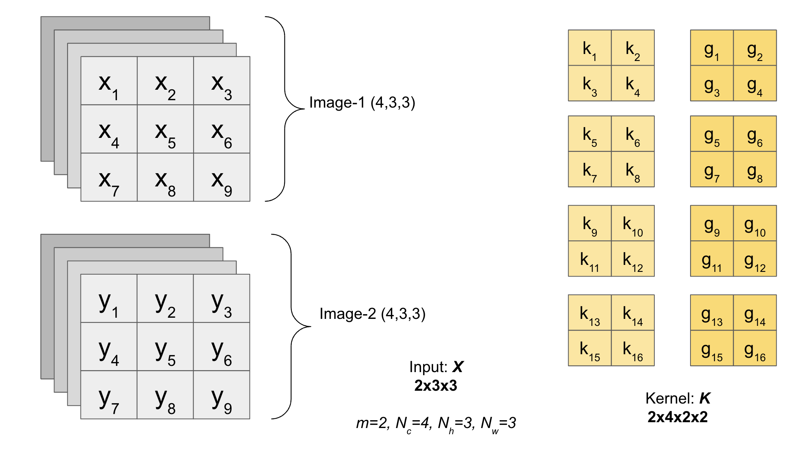
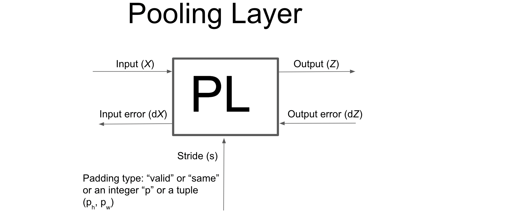

3.3. Convolutional Neural Networks from scratch in Python
Contents
3.3. Convolutional Neural Networks from scratch in Python#
We will be building Convolutional Neural Networks (CNN) model from scratch using Numpy in Python. Please check out the following list of ingredients (if you have not already done so), so that you can cook (code) the CNN model from scratch because this is going to be the most general CNN model that you can find anywhere on the net (without using any for loops, except for the epochs part :))!
Note: I have already explained (in detail) most of the code sections in my previous chapters (like forward and backward propagation in Convolution layers, forward and backward propagation in Pooling layers, and MLP model for Fully connected layers). I will just put the list for you to go and check them out (so that I can skip the tedious work of explaining them again and concentrate more on the fun part).
Ingredients
Now that we have all the ingredients available, we are ready to code the most general Convolutional Neural Networks (CNN) model from scratch using Numpy in Python.
Import essential libraries#
# numpy for linear algebra
import numpy as np
# matplotlib for plotting the loss functions and/or accuracy
import matplotlib.pyplot as plt
# confusion matrix
from sklearn.metrics import confusion_matrix
# accuracy score
from sklearn.metrics import accuracy_score
# show progress bar
from tqdm import tqdm
Activation class#
This class will contain class methods to calculate activation functions and also it will calculate the forward propagation and backpropagation as per the decsription in the chapter Shortcut to calculate forward pass and backpropagation across layers (link to previous chapter).
class Activation:
def __init__(self, activation_type=None):
'''
Parameters
activation_type: type of activation
available options are 'sigmoid', 'linear', 'tanh', 'softmax', 'prelu' and 'relu'
'''
if activation_type is None:
self.activation_type = 'linear'
else:
self.activation_type = activation_type
def linear(self, x):
'''
Parameters
x: input matrix of shape (m, d)
where 'm' is the number of samples (in case of batch gradient descent of size m)
and 'd' is the number of features
'''
return x
def d_linear(self, x):
'''
Parameters
x: input matrix of shape (m, d)
where 'm' is the number of samples (in case of batch gradient descent of size m)
and 'd' is the number of features
'''
return np.ones(x.shape)
def sigmoid(self, x):
'''
Parameters
x: input matrix of shape (m, d)
where 'm' is the number of samples (in case of batch gradient descent of size m)
and 'd' is the number of features
'''
return 1/(1+np.exp(-x))
def d_sigmoid(self, x):
'''
Parameters
x: input matrix of shape (m, d)
where 'm' is the number of samples (in case of batch gradient descent of size m)
and 'd' is the number of features
'''
return self.sigmoid(x) * (1-self.sigmoid(x))
def tanh(self, x):
'''
Parameters
x: input matrix of shape (m, d)
where 'm' is the number of samples (in case of batch gradient descent of size m)
and 'd' is the number of features
'''
return (np.exp(x) - np.exp(-x)) / (np.exp(x) + np.exp(-x))
def d_tanh(self, x):
'''
Parameters
x: input matrix of shape (m, d)
where 'm' is the number of samples (in case of batch gradient descent of size m)
and 'd' is the number of features
'''
return 1-(self.tanh(x))**2
def ReLU(self, x):
'''
Parameters
x: input matrix of shape (m, d)
where 'm' is the number of samples (in case of batch gradient descent of size m)
and 'd' is the number of features
'''
return x * (x > 0)
def d_ReLU(self, x):
'''
Parameters
x: input matrix of shape (m, d)
where 'm' is the number of samples (in case of batch gradient descent of size m)
and 'd' is the number of features
'''
return (x>0)*np.ones(x.shape)
def PReLU(self, x, alpha=0.2):
'''
Parameters
alpha: slope parameter (𝛼)
x: input matrix of shape (m, d)
where 'm' is the number of samples (or rows)
and 'd' is the number of features (or columns)
'''
return np.where(x > 0, x, alpha*x)
def d_PReLU(self, x, alpha=0.2):
'''
Parameters
alpha: slope parameter (𝛼)
x: input matrix of shape (m, d)
where 'm' is the number of samples (or rows)
and 'd' is the number of features (or columns)
'''
return np.where(x > 0, 1, alpha)
def softmax(self, x):
'''
Parameters
x: input matrix of shape (m, d)
where 'm' is the number of samples (in case of batch gradient descent of size m)
and 'd' is the number of features
'''
z = x - np.max(x, axis=-1, keepdims=True)
numerator = np.exp(z)
denominator = np.sum(numerator, axis=-1, keepdims=True)
softmax = numerator / denominator
return softmax
def d_softmax(self, x):
'''
Parameters
x: input matrix of shape (m, d)
where 'm' is the number of samples (in case of batch gradient descent of size m)
and 'd' is the number of features
'''
if len(x.shape)==1:
x = np.array(x).reshape(1,-1)
else:
x = np.array(x)
m, d = x.shape
a = self.softmax(x)
tensor1 = np.einsum('ij,ik->ijk', a, a)
tensor2 = np.einsum('ij,jk->ijk', a, np.eye(d, d))
return tensor2 - tensor1
def get_activation(self, x):
'''
Parameters
x: input matrix of shape (m, d)
where 'm' is the number of samples (in case of batch gradient descent of size m)
and 'd' is the number of features
'''
if self.activation_type == 'sigmoid':
return self.sigmoid(x)
elif self.activation_type == 'tanh':
return self.tanh(x)
elif self.activation_type == 'relu':
return self.ReLU(x)
elif self.activation_type == 'linear':
return self.linear(x)
elif self.activation_type == 'prelu':
return self.PReLU(x)
elif self.activation_type == 'softmax':
return self.softmax(x)
else:
raise ValueError("Valid Activations are only 'sigmoid', 'linear', 'tanh' 'softmax', 'prelu' and 'relu'")
def get_d_activation(self, x):
'''
Parameters
x: input matrix of shape (m, d)
where 'm' is the number of samples (in case of batch gradient descent of size m)
and 'd' is the number of features
'''
if self.activation_type == 'sigmoid':
return self.d_sigmoid(x)
elif self.activation_type == 'tanh':
return self.d_tanh(x)
elif self.activation_type == 'relu':
return self.d_ReLU(x)
elif self.activation_type == 'linear':
return self.d_linear(x)
elif self.activation_type == 'prelu':
return self.d_PReLU(x)
elif self.activation_type == 'softmax':
return self.d_softmax(x)
else:
raise ValueError("Valid Activations are only 'sigmoid', 'linear', 'tanh', 'softmax', 'prelu' and 'relu'")
def forward(self, X):
self.X = X
z = self.get_activation(X)
return z
def backpropagation(self, dz):
f_prime = self.get_d_activation(self.X)
if self.activation_type=='softmax':
# because derivative of softmax is a tensor
dx = np.einsum('ijk,ik->ij', f_prime, dz)
else:
dx = dz * f_prime
return dx
Cost function#
Follow the lecture to develop the cost function class
class Cost:
def __init__(self, cost_type='mse'):
'''
Parameters
cost_type: type of cost function
available options are 'mse', and 'cross-entropy'
'''
self.cost_type = cost_type
def mse(self, a, y):
'''
Parameters
a: Predicted output array of shape (m, d)
y: Actual output array of shape (m, d)
'''
return (1/2)*np.sum((np.linalg.norm(a-y, axis=1))**2)
def d_mse(self, a, y):
'''
represents dJ/da
Parameters
a: Predicted output array of shape (m, d)
y: Actual output array of shape (m, d)
'''
return a - y
def cross_entropy(self, a, y, epsilon=1e-12):
'''
Parameters
a: Predicted output array of shape (m, d)
y: Actual output array of shape (m, d)
'''
a = np.clip(a, epsilon, 1. - epsilon)
return -np.sum(y*np.log(a))
def d_cross_entropy(self, a, y, epsilon=1e-12):
'''
represents dJ/da
Parameters
a: Predicted output array of shape (m, d)
y: Actual output array of shape (m, d)
'''
a = np.clip(a, epsilon, 1. - epsilon)
return -y/a
def get_cost(self, a, y):
'''
Parameters
a: Predicted output array of shape (m, d)
y: Actual output array of shape (m, d)
'''
if self.cost_type == 'mse':
return self.mse(a, y)
elif self.cost_type == 'cross-entropy':
return self.cross_entropy(a, y)
else:
raise ValueError("Valid cost functions are only 'mse', and 'cross-entropy'")
def get_d_cost(self, a, y):
'''
Parameters
a: Predicted output array of shape (m, d)
y: Actual output array of shape (m, d)
'''
if self.cost_type == 'mse':
return self.d_mse(a, y)
elif self.cost_type == 'cross-entropy':
return self.d_cross_entropy(a, y)
else:
raise ValueError("Valid cost functions are only 'mse', and 'cross-entropy'")
Optimizers#
This class contains different optimizers (such as RMSProp, Adam, etc) used for updating the parameters.
class Optimizer:
def __init__(self, optimizer_type=None, shape_W=None, shape_b=None,
momentum1=0.9, momentum2=0.999, epsilon=1e-8):
'''
Parameters
momentum1: float hyperparameter >= 0 that accelerates gradient descent in the relevant
direction and dampens oscillations. Defaults to 0, i.e., vanilla gradient descent.
Also used in RMSProp
momentum2: used in Adam only
optimizer_type: type of optimizer
available options are 'gd', 'sgd' (This also includes momentum), 'adam', and 'rmsprop'
shape_W: Shape of the weight matrix W/ Kernel K
shape_b: Shape of the bias matrix b
epsilon: parameter used in RMSProp and Adam to avoid division by zero error
'''
if optimizer_type is None:
self.optimizer_type = 'adam'
else:
self.optimizer_type = optimizer_type
self.momentum1 = momentum1
self.momentum2 = momentum2
self.epsilon = epsilon
self.vdW = np.zeros(shape_W)
self.vdb = np.zeros(shape_b)
self.SdW = np.zeros(shape_W)
self.Sdb = np.zeros(shape_b)
def GD(self, dW, db, k):
'''
dW: gradient of Weight W for iteration k
db: gradient of bias b for iteration k
k: iteration number
'''
return dW, db
def SGD(self, dW, db, k):
'''
dW: gradient of Weight W for iteration k
db: gradient of bias b for iteration k
k: iteration number
'''
self.vdW = self.momentum1*self.vdW + (1-self.momentum1)*dW
self.vdb = self.momentum1*self.vdb + (1-self.momentum1)*db
return self.vdW, self.vdb
def RMSProp(self, dW, db, k):
'''
dW: gradient of Weight W for iteration k
db: gradient of bias b for iteration k
k: iteration number
'''
self.SdW = self.momentum2*self.SdW + (1-self.momentum2)*(dW**2)
self.Sdb = self.momentum2*self.Sdb + (1-self.momentum2)*(db**2)
den_W = np.sqrt(self.SdW) + self.epsilon
den_b = np.sqrt(self.Sdb) + self.epsilon
return dW/den_W, db/den_b
def Adam(self, dW, db, k):
'''
dW: gradient of Weight W for iteration k
db: gradient of bias b for iteration k
k: iteration number
'''
# momentum
self.vdW = self.momentum1*self.vdW + (1-self.momentum1)*dW
self.vdb = self.momentum1*self.vdb + (1-self.momentum1)*db
# rmsprop
self.SdW = self.momentum2*self.SdW + (1-self.momentum2)*(dW**2)
self.Sdb = self.momentum2*self.Sdb + (1-self.momentum2)*(db**2)
# correction
if k>1:
vdW_h = self.vdW / (1-(self.momentum1**k))
vdb_h = self.vdb / (1-(self.momentum1**k))
SdW_h = self.SdW / (1-(self.momentum2**k))
Sdb_h = self.Sdb / (1-(self.momentum2**k))
else:
vdW_h = self.vdW
vdb_h = self.vdb
SdW_h = self.SdW
Sdb_h = self.Sdb
den_W = np.sqrt(SdW_h) + self.epsilon
den_b = np.sqrt(Sdb_h) + self.epsilon
return vdW_h/den_W, vdb_h/den_b
def get_optimization(self, dW, db, k):
if self.optimizer_type == 'gd':
return self.GD(dW, db, k)
if self.optimizer_type == 'sgd':
return self.SGD(dW, db, k)
if self.optimizer_type == 'rmsprop':
return self.RMSProp(dW, db, k)
if self.optimizer_type == 'adam':
return self.Adam(dW, db, k)
else:
raise ValueError("Valid optimizer options are only 'gd', 'sgd', 'rmsprop', and 'adam'.")
Learning Rate decay#
This class contains different methods to implement the learning rate decay scheduler.
class LearningRateDecay:
def __init__(self):
pass
def constant(self, t, lr_0):
'''
t: iteration
lr_0: initial learning rate
'''
return lr_0
def time_decay(self, t, lr_0, k):
'''
lr_0: initial learning rate
k: Decay rate
t: iteration number
'''
lr = lr_0 /(1+(k*t))
return lr
def step_decay(self, t, lr_0, F, D):
'''
lr_0: initial learning rate
F: factor value controlling the rate in which the learning date drops
D: “Drop every” iteration
t: current iteration
'''
mult = F**np.floor((1+t)/D)
lr = lr_0 * mult
return lr
def exponential_decay(self, t, lr_0, k):
'''
lr_0: initial learning rate
k: Exponential Decay rate
t: iteration number
'''
lr = lr_0 * np.exp(-k*t)
return lr
Utility function#
This class contains several utility functions such as one-hot vector, label encoder, normalization, etc
class Utility:
def __init__(self):
pass
def label_encoding(self, Y):
'''
Parameters:
Y: (m,d) shape matrix with categorical data
Return
result: label encoded data of 𝑌
idx_list: list of the dictionaries containing the unique values
of the columns and their mapping to the integer.
'''
idx_list = []
result = []
for col in range(Y.shape[1]):
indexes = {val: idx for idx, val in enumerate(np.unique(Y[:, col]))}
result.append([indexes[s] for s in Y[:, col]])
idx_list.append(indexes)
return np.array(result).T, idx_list
def onehot(self, X):
'''
Parameters:
X: 1D array of labels of length "m"
Return
X_onehot: (m,d) one hot encoded matrix (one-hot of X)
(where d is the number of unique values in X)
indexes: dictionary containing the unique values of X and their mapping to the integer column
'''
indexes = {val: idx for idx, val in enumerate(np.unique(X))}
y = np.array([indexes[s] for s in X])
X_onehot = np.zeros((y.size, len(indexes)))
X_onehot[np.arange(y.size), y] = 1
return X_onehot, indexes
def minmax(self, X, min_X=None, max_X=None):
if min_X is None:
min_X = np.min(X, axis=0)
if max_X is None:
max_X = np.max(X, axis=0)
Z = (X - min_X) / (max_X - min_X)
return Z, min_X, max_X
def standardize(self, X, mu=None, std=None):
if mu is None:
mu = np.mean(X, axis=0)
if std is None:
std = np.std(X, axis=0)
Z = (X - mu) / std
return Z, mu, std
def inv_standardize(self, Z, mu, std):
X = Z*std + mu
return X
def train_test_split(self, X, y, test_ratio=0.2, seed=None):
if seed is not None:
np.random.seed(seed)
train_ratio = 1-test_ratio
indices = np.random.permutation(X.shape[0])
train_idx, test_idx = indices[:int(train_ratio*len(X))], indices[int(train_ratio*len(X)):]
X_train, X_test = X[train_idx,:], X[test_idx,:]
y_train, y_test = y[train_idx], y[test_idx]
return X_train, X_test, y_train, y_test
Weights initializer class#
class Weights_initializer:
def __init__(self, shape, initializer_type=None, seed=None):
'''
Parameters
shape: Shape of the weight matrix
initializer_type: type of weight initializer
available options are 'zeros', 'ones', 'random_normal', 'random_uniform',
'he_normal', 'xavier_normal' and 'glorot_normal'
'''
self.shape = shape
if initializer_type is None:
self.initializer_type = "he_normal"
else:
self.initializer_type = initializer_type
self.seed = seed
def zeros_initializer(self):
if self.seed is not None:
np.random.seed(self.seed)
return np.zeros(self.shape)
def ones_initializer(self):
if self.seed is not None:
np.random.seed(self.seed)
return np.ones(self.shape)
def random_normal_initializer(self):
if self.seed is not None:
np.random.seed(self.seed)
return np.random.normal(size=self.shape)
def random_uniform_initializer(self):
if self.seed is not None:
np.random.seed(self.seed)
return np.random.uniform(size=self.shape)
def he_initializer(self):
if self.seed is not None:
np.random.seed(self.seed)
try:
F, Kc, Kh, Kw = self.shape
except:
Kh, Kw = self.shape
return np.random.randn(*self.shape) * np.sqrt(2/Kh)
def xavier_initializer(self):
'''
shape: Shape of the Kernel matrix.
'''
if self.seed is not None:
np.random.seed(self.seed)
try:
F, Kc, Kh, Kw = self.shape
except:
Kh, Kw = self.shape
return np.random.randn(*self.shape) * np.sqrt(1/Kh)
def glorot_initializer(self):
'''
shape: Shape of the weight matrix.
'''
if self.seed is not None:
np.random.seed(self.seed)
try:
F, Kc, Kh, Kw = self.shape
except:
Kh, Kw = self.shape
return np.random.randn(*self.shape) * np.sqrt(2/(Kh+Kw))
def get_initializer(self):
if self.initializer_type == 'zeros':
return self.zeros_initializer()
elif self.initializer_type == 'ones':
return self.ones_initializer()
elif self.initializer_type == 'random_normal':
return self.random_normal_initializer()
elif self.initializer_type == 'random_uniform':
return self.random_uniform_initializer()
elif self.initializer_type == 'he_normal':
return self.he_initializer()
elif self.initializer_type == 'xavier_normal':
return self.xavier_initializer()
elif self.initializer_type == 'glorot_normal':
return self.glorot_initializer()
else:
raise ValueError("Valid initializer options are 'zeros', 'ones', 'random_normal', 'random_uniform', 'he_normal', 'xavier_normal', and 'glorot_normal'")
Dense class#
Dense class implements the operation:
where activation \(f(.)\) is used if specified, else we do not use it. \(W\) is a weights matrix created by the Dense layer based on type of initialization (link to previous chapter) provided, and \(b\) is a bias vector created by the layer (only applicable if use_bias is True). These are all attributes of Dense.
class Dense:
def __init__(self, neurons, activation_type=None, use_bias=True,
weight_initializer_type=None, weight_regularizer=None, seed=None, input_dim=None):
'''
Parameters:
neurons: Positive integer (number of neurons), dimensionality of the output
activation_type: type of activation
available options are 'sigmoid', 'linear', 'tanh', 'softmax', 'prelu' and 'relu'
If you don't specify anything, no activation is applied (ie. "linear" activation: a(x) = x).
use_bias: Boolean, whether the layer uses a bias vector.
weight_initializer_type: Initializer for the kernel weights matrix.
weight_regularizer: Tuple, Regularizer function applied to the weights matrix ('L2', 0.01) or ('L1', 2)
seed: To generate reproducable results
input_dim: integer showing number of neurons in input layer
'''
self.neurons = neurons
self.activation = Activation(activation_type=activation_type)
self.use_bias = use_bias
self.weight_initializer_type = weight_initializer_type # none is handled
if weight_regularizer is None:
self.weight_regularizer = ('L2', 0)
else:
self.weight_regularizer = weight_regularizer
self.seed = seed
self.input_dim = input_dim
def initialize_parameters(self, hl, optimizer_type):
'''
hl: Number of neurons in layer l-1
'''
shape_W = (hl, self.neurons)
shape_b = (self.neurons, 1)
initializer = Weights_initializer(shape=shape_W,
initializer_type=self.weight_initializer_type,
seed=self.seed)
self.W = initializer.get_initializer()
self.b = np.zeros(shape_b)
self.optimizer = Optimizer(optimizer_type=optimizer_type, shape_W=shape_W, shape_b=shape_b)
def forward(self, X):
self.X = X
r = X @ self.W
self.z = r + self.b.T
a = self.activation.forward(self.z)
return a
def backpropagation(self, da):
dz = self.activation.backpropagation(da)
dr = dz.copy()
self.db = np.sum(dz, axis=0).reshape(-1,1)
self.dW = (self.X.T) @ dr
dX = dr @ (self.W.T)
return dX
def update(self, lr, m, k):
'''
Parameters:
lr: learning rate
m: batch_size (sumber of samples in batch)
k: iteration_number
'''
dW, db = self.optimizer.get_optimization(self.dW, self.db, k)
if self.weight_regularizer[0].lower()=='l2':
dW += self.weight_regularizer[1] * self.W
elif self.weight_regularizer[0].lower()=='l1':
dW += self.weight_regularizer[1] * np.sign(self.W)
self.W -= dW*(lr/m)
if self.use_bias:
self.b -= db*(lr/m)
Dropout class#
This class will perform forward and backpropagation for a Dropout layer
class Dropout:
def __init__(self, p):
'''
Parameters
p: Dropout probability
'''
self.p = p
if self.p == 0:
self.p += 1e-6
if self.p == 1:
self.p -= 1e-6
def forward(self, X):
self.mask = (np.random.rand(*X.shape) < self.p) / self.p
Z = X * self.mask
return Z
def backpropagation(self, dZ):
dX = dZ * self.mask
return dX
Batch Normalization class#
This class will perform forward and backpropagation for Batch Normalization layer. Right now it is only prepared for 1D data (that is it can be used only in Fully Connected or MLP layers and not in Convolution or Maxpool).
Note: We will initialise \(\gamma\) as ones and \(\beta\) as zeroes so that the output of the linear batch-norm transformation initially follows the standard zero-mean unit-variance normal distribution. This provides a normalised starting point, for which the model can update the \(\gamma\) and \(\beta\) to scale and shift the distribution(s) of each input accordingly (for the current layer).
Forward pass
eps represents: \(\epsilon\)
mu represents: \(\mu\)
var represents: \(\sigma^2\)
zmu represents: \(\bar{z_l}\)
ivar represents: \(\frac{1}{\sqrt{\sigma^2 + \epsilon}}\)
zhat represents: \(\hat{z_l}\)
q represents: \(q_l\)
Backpropagation
This dq variable below represents \(\frac{\partial J}{\partial q_l}\)
dgamma represents: \(\frac{\partial J}{\partial \gamma}\)
dbeta represents: \(\frac{\partial J}{\partial \beta}\)
dzhat represents: \(\frac{\partial J}{\partial \hat{z_l}}\)
dvar represents: \(\frac{\partial J}{\partial \sigma^2}\)
dmu represents: \(\frac{\partial J}{\partial \mu}\)
dz represents: \(\frac{\partial J}{\partial z_l}\)
class BatchNormalization:
def __init__(self, momentum=0.9, epsilon=1e-6):
'''
Parameters
momentum: Momentum for the moving average
epsilon: 𝜖, Small float added to variance to avoid dividing by zero
'''
self.epsilon = epsilon
self.momentum = momentum
def initialize_parameters(self, d):
'''
d: Shape of input to BN layer
'''
self.gamma = np.ones((d))
self.beta = np.zeros((d))
self.running_mean = np.zeros((d))
self.running_var = np.zeros((d))
def forward(self, z, mode='train'):
'''
z: Input to BN layer
mode: forward pass used for train or test
'''
if mode=='train':
self.m, self.d = z.shape
self.mu = np.mean(z, axis = 0) # 𝜇
self.var = np.var(z, axis=0) # 𝜎^2
self.zmu = z - self.mu # z - 𝜇
self.ivar = 1 / np.sqrt(self.var + self.epsilon) # 𝜎𝑖𝑛𝑣
self.zhat = self.zmu * self.ivar
q = self.gamma*self.zhat + self.beta # ql
self.running_mean = self.momentum * self.running_mean + (1 - self.momentum) * self.mu
self.running_var = self.momentum * self.running_var + (1 - self.momentum) * self.var
elif mode=='test':
q = (z - self.running_mean) / np.sqrt(self.running_var + self.epsilon)
q = self.gamma*q + self.beta
else:
raise ValueError('Invalid forward batchnorm mode "%s"' % mode)
return q
def backpropagation(self, dq):
self.dgamma = np.sum(dq * self.zhat, axis=0)
self.dbeta = np.sum(dq, axis=0)
dzhat = dq * self.gamma
dvar = np.sum(dzhat * self.zmu * (-.5) * (self.ivar**3), axis=0)
dmu = np.sum(dzhat * (-self.ivar), axis=0)
dz = dzhat * self.ivar + dvar * (2/self.m) * self.zmu + (1/self.m)*dmu
return dz
def update(self, lr, m, k):
'''
Parameters:
lr: learning rate
m: batch_size (sumber of samples in batch)
k: iteration_number
'''
self.gamma -= self.dgamma*(lr/m)
self.beta -= self.dbeta*(lr/m)
Padding2D class#
This class will perform padding on a batch of 2D image with channels. We will be considering padding as a separate layer only which contains its own forward and backpropagation operations.
We need a small function such that we can extract the original input errors from the padding ones. This you can consider as backpropagation through padding operation
class Padding2D:
def __init__(self, p='valid'):
'''
Parameters:
p: padding type
Allowed types are only 'same', 'valid', an integer or a tuple of length 2.
'''
self.p = p
def get_dimensions(self, input_shape, kernel_size, s=(1,1)):
'''
Utility function to help get the dimension of the output after padding
'''
if len(input_shape)==4:
m, Nc, Nh, Nw = input_shape
elif len(input_shape)==3:
Nc, Nh, Nw = input_shape
Kh, Kw = kernel_size
sh, sw = s
p = self.p
if type(p)==int:
pt, pb = p, p
pl, pr = p, p
if type(p)==tuple:
ph, pw = p
pt, pb = ph//2, (ph+1)//2
pl, pr = pw//2, (pw+1)//2
elif p=='valid':
pt, pb = 0, 0
pl, pr = 0, 0
elif p=='same':
# calculating how much padding is required in all 4 directions
# (top, bottom, left and right)
ph = (sh-1)*Nh + Kh - sh
pw = (sw-1)*Nw + Kw - sw
pt, pb = ph//2, (ph+1)//2
pl, pr = pw//2, (pw+1)//2
else:
raise ValueError("Incorrect padding type. Allowed types are only 'same', 'valid', an integer or a tuple of length 2.")
if len(input_shape)==4:
output_shape = (m, Nc, Nh+pt+pb, Nw+pl+pr)
elif len(input_shape)==3:
output_shape = (Nc, Nh+pt+pb, Nw+pl+pr)
return output_shape, (pt, pb, pl, pr)
def forward(self, X, kernel_size, s=(1,1)):
'''
Parameters:
X: input of shape (m, Nc, Nh, Nw)
s: strides along height and width (sh, sw)
kernel_size: kernel size as specified in Conv2D layer
Returns:
Xp: padded X
'''
self.input_shape = X.shape
m, Nc, Nh, Nw = self.input_shape
self.output_shape, (self.pt, self.pb, self.pl, self.pr) = self.get_dimensions(self.input_shape,
kernel_size, s=s)
zeros_r = np.zeros((m, Nc, Nh, self.pr))
zeros_l = np.zeros((m, Nc, Nh, self.pl))
zeros_t = np.zeros((m, Nc, self.pt, Nw + self.pl + self.pr))
zeros_b = np.zeros((m, Nc, self.pb, Nw + self.pl + self.pr))
Xp = np.concatenate((X, zeros_r), axis=3)
Xp = np.concatenate((zeros_l, Xp), axis=3)
Xp = np.concatenate((zeros_t, Xp), axis=2)
Xp = np.concatenate((Xp, zeros_b), axis=2)
return Xp
def backpropagation(self, dXp):
'''
Parameters:
dXp: Backprop Error of padded X (Xp)
Return:
dX: Backprop Error of X
'''
m, Nc, Nh, Nw = self.input_shape
dX = dXp[:, :, self.pt:self.pt+Nh, self.pl:self.pl+Nw]
return dX
Convolution2D class#
This class will perform forward and backpropagation for a Convolution layer on a batch of 2D image with channels.
We have an Input with batch of images (with channels) and multiple filters.
Shape of Image will be \((m, N_c, N_h, N_w)\).
The shape of Kernel will be \((F, K_c, K_h, K_w)\) where \(F\) is the total number of filters.


class Conv2D:
def __init__(self, filters, kernel_size, s=(1, 1), p='valid',
activation_type=None, use_bias=True, weight_initializer_type=None,
kernel_regularizer=None, seed=None, input_shape=None):
'''
Parameters:
filters: Integer, the number of output filters in the convolution (F).
kernel_size: An integer or tuple/list of 2 integers,
specifying the height and width of the 2D convolution window.
s: strides along height and width (sh, sw)
p: padding type
Allowed types are only 'same', 'valid', an integer or a tuple of length 2.
activation_type: type of activation
available options are 'sigmoid', 'linear', 'tanh', 'softmax', 'prelu' and 'relu'
If you don't specify anything, no activation is applied (ie. "linear" activation: a(x) = x).
use_bias: Boolean, whether the layer uses a bias vector.
weight_initializer_type: Initializer for the kernel weights matrix.
kernel_regularizer: Tuple, Regularizer function applied to the kernel matrix ('L2', 0.01) or ('L1', 2)
seed: To generate reproducable results
input_shape: tuple showing size of input: (batch_size, channels, rows, cols) -> (m, Nc, Nh, Nw)
'''
self.padding = Padding2D(p=p)
self.F = filters
self.input_shape_x = input_shape
if type(kernel_size)==int:
self.kernel_size = (kernel_size, kernel_size)
elif type(kernel_size)==tuple and len(kernel_size)==2:
self.kernel_size = kernel_size
self.Kh, self.Kw = self.kernel_size
if type(s)==int:
self.s = (s,s)
elif type(s)==tuple and len(s)==2:
self.s = s
self.sh, self.sw = self.s
self.activation = Activation(activation_type=activation_type)
self.use_bias = use_bias
self.weight_initializer_type = weight_initializer_type # none is handled
if kernel_regularizer is None:
self.kernel_regularizer = ('L2', 0)
else:
self.kernel_regularizer = kernel_regularizer
self.seed = seed
def get_dimensions(self, input_shape):
self.input_shape_x = input_shape # (3D or 4D)
# Padded X will be actual input to this Conv2D
self.input_shape, _ = self.padding.get_dimensions(self.input_shape_x,
self.kernel_size, self.s)
if len(input_shape)==3:
self.Nc, self.Nh, self.Nw = self.input_shape
elif len(input_shape)==4:
self.m, self.Nc, self.Nh, self.Nw = self.input_shape
# Output shape
self.Oh = (self.Nh - self.Kh)//self.sh + 1
self.Ow = (self.Nw - self.Kw)//self.sw + 1
if len(input_shape)==3:
self.output_shape = (self.F, self.Oh, self.Ow)
elif len(input_shape)==4:
self.output_shape = (self.m, self.F, self.Oh, self.Ow)
def initialize_parameters(self, input_shape, optimizer_type):
self.get_dimensions(input_shape)
shape_b = (self.F, self.Oh, self.Ow)
shape_K = (self.F, self.Nc, self.Kh, self.Kw)
initializer = Weights_initializer(shape=shape_K,
initializer_type=self.weight_initializer_type,
seed=self.seed)
self.K = initializer.get_initializer()
self.b = np.zeros(shape_b)
self.optimizer = Optimizer(optimizer_type=optimizer_type, shape_W=shape_K, shape_b=shape_b)
def dilate2D(self, X, Dr=(1,1)):
dh, dw = Dr # Dilate rate
m, C, H, W = X.shape
Xd = np.insert(arr=X, obj=np.repeat(np.arange(1,W), dw-1), values=0, axis=-1)
Xd = np.insert(arr=Xd, obj=np.repeat(np.arange(1,H), dh-1), values=0, axis=-2)
return Xd
def prepare_subMatrix(self, X, Kh, Kw, s):
m, Nc, Nh, Nw = X.shape
sh, sw = s
Oh = (Nh-Kh)//sh + 1
Ow = (Nw-Kw)//sw + 1
strides = (Nc*Nh*Nw, Nw*Nh, Nw*sh, sw, Nw, 1)
strides = tuple(i * X.itemsize for i in strides)
subM = np.lib.stride_tricks.as_strided(X,
shape=(m, Nc, Oh, Ow, Kh, Kw),
strides=strides)
return subM
def convolve(self, X, K, s=(1,1), mode='front'):
F, Kc, Kh, Kw = K.shape
subM = self.prepare_subMatrix(X, Kh, Kw, s)
if mode=='front':
return np.einsum('fckl,mcijkl->mfij', K, subM)
elif mode=='back':
return np.einsum('fdkl,mcijkl->mdij', K, subM)
elif mode=='param':
return np.einsum('mfkl,mcijkl->fcij', K, subM)
def dZ_D_dX(self, dZ_D, Nh, Nw):
# Pad the dilated dZ (dZ_D -> dZ_Dp)
_, _, Hd, Wd = dZ_D.shape
ph = Nh - Hd + self.Kh - 1
pw = Nw - Wd + self.Kw - 1
padding_back = Padding2D(p=(ph, pw))
dZ_Dp = padding_back.forward(dZ_D, self.kernel_size, self.s)
# Rotate K by 180 degrees
K_rotated = self.K[:, :, ::-1, ::-1]
# convolve dZ_Dp with K_rotated
dXp = self.convolve(dZ_Dp, K_rotated, mode='back')
dX = self.padding.backpropagation(dXp)
return dX
def forward(self, X):
# padding
self.X = X
Xp = self.padding.forward(X, self.kernel_size, self.s)
# convolve Xp with K
Z = self.convolve(Xp, self.K, self.s) + self.b
a = self.activation.forward(Z)
return a
def backpropagation(self, da):
Xp = self.padding.forward(self.X, self.kernel_size, self.s)
m, Nc, Nh, Nw = Xp.shape
dZ = self.activation.backpropagation(da)
# Dilate dZ (dZ-> dZ_D)
dZ_D = self.dilate2D(dZ, Dr=self.s)
dX = self.dZ_D_dX(dZ_D, Nh, Nw)
# Gradient dK
_, _, Hd, Wd = dZ_D.shape
ph = self.Nh - Hd - self.Kh + 1
pw = self.Nw - Wd - self.Kw + 1
padding_back = Padding2D(p=(ph, pw))
dZ_Dp = padding_back.forward(dZ_D, self.kernel_size, self.s)
self.dK = self.convolve(Xp, dZ_Dp, mode='param')
# Gradient db
self.db = np.sum(dZ, axis=0)
return dX
def update(self, lr, m, k):
'''
Parameters:
lr: learning rate
m: batch_size (sumber of samples in batch)
k: iteration_number
'''
dK, db = self.optimizer.get_optimization(self.dK, self.db, k)
if self.kernel_regularizer[0].lower()=='l2':
dK += self.kernel_regularizer[1] * self.K
elif self.weight_regularizer[0].lower()=='l1':
dK += self.kernel_regularizer[1] * np.sign(self.K)
self.K -= self.dK*(lr/m)
if self.use_bias:
self.b -= self.db*(lr/m)
Maxpool2D class#
This class will perform forward and backpropagation for a Pooling layer on a batch of 2D image with channels.
Type of Pooling available are: Max and Mean

class Pooling2D:
def __init__(self, pool_size=(2,2), s=(2,2), p='valid', pool_type='max'):
'''
Parameters:
pool_size: An integer or tuple/list of 2 integers,
specifying the height and width of the 2D convolution window.
s: strides along height and width (sh, sw)
p: padding type
Allowed types are only 'same', 'valid', an integer or a tuple of length 2.
pool_type: pooling type
Allowed types are only 'max', or 'mean'
'''
self.padding = Padding2D(p=p)
if type(pool_size)==int:
self.pool_size = (pool_size, pool_size)
elif type(pool_size)==tuple and len(pool_size)==2:
self.pool_size = pool_size
self.Kh, self.Kw = self.pool_size
if type(s)==int:
self.s = (s,s)
elif type(s)==tuple and len(s)==2:
self.s = s
self.sh, self.sw = self.s
self.pool_type = pool_type
def get_dimensions(self, input_shape):
if len(input_shape)==4:
m, Nc, Nh, Nw = input_shape
elif len(input_shape)==3:
Nc, Nh, Nw = input_shape
Oh = (Nh-self.Kh)//self.sh + 1
Ow = (Nw-self.Kw)//self.sw + 1
if len(input_shape)==4:
self.output_shape = (m, Nc, Oh, Ow)
elif len(input_shape)==3:
self.output_shape = (Nc, Oh, Ow)
def prepare_subMatrix(self, X, pool_size, s):
m, Nc, Nh, Nw = X.shape
sh, sw = s
Kh, Kw = pool_size
Oh = (Nh-Kh)//sh + 1
Ow = (Nw-Kw)//sw + 1
strides = (Nc*Nh*Nw, Nh*Nw, Nw*sh, sw, Nw, 1)
strides = tuple(i * X.itemsize for i in strides)
subM = np.lib.stride_tricks.as_strided(X,
shape=(m, Nc, Oh, Ow, Kh, Kw),
strides=strides)
return subM
def pooling(self, X, pool_size=(2,2), s=(2,2)):
subM = self.prepare_subMatrix(X, pool_size, s)
if self.pool_type=='max':
return np.max(subM, axis=(-2,-1))
elif self.pool_type=='mean':
return np.mean(subM, axis=(-2,-1))
else:
raise ValueError("Allowed pool types are only 'max' or 'mean'.")
def prepare_mask(self, subM, Kh, Kw):
m, Nc, Oh, Ow, Kh, Kw = subM.shape
a = subM.reshape(-1,Kh*Kw)
idx = np.argmax(a, axis=1)
b = np.zeros(a.shape)
b[np.arange(b.shape[0]), idx] = 1
mask = b.reshape((m, Nc, Oh, Ow, Kh, Kw))
return mask
def mask_dXp(self, mask, Xp, dZ, Kh, Kw):
dA = np.einsum('i,ijk->ijk', dZ.reshape(-1), mask.reshape(-1,Kh,Kw)).reshape(mask.shape)
m, Nc, Nh, Nw = Xp.shape
strides = (Nc*Nh*Nw, Nh*Nw, Nw, 1)
strides = tuple(i * Xp.itemsize for i in strides)
dXp = np.lib.stride_tricks.as_strided(dA, Xp.shape, strides)
return dXp
def maxpool_backprop(self, dZ, X):
Xp = self.padding.forward(X, self.pool_size, self.s)
subM = self.prepare_subMatrix(Xp, self.pool_size, self.s)
m, Nc, Oh, Ow, Kh, Kw = subM.shape
m, Nc, Nh, Nw = Xp.shape
mask = self.prepare_mask(subM, Kh, Kw)
dXp = self.mask_dXp(mask, Xp, dZ, Kh, Kw)
return dXp
def dZ_dZp(self, dZ):
sh, sw = self.s
Kh, Kw = self.pool_size
dZp = np.kron(dZ, np.ones((Kh,Kw), dtype=dZ.dtype)) # similar to repelem in matlab
jh, jw = Kh-sh, Kw-sw # jump along height and width
if jw!=0:
L = dZp.shape[-1]-1
l1 = np.arange(sw, L)
l2 = np.arange(sw + jw, L + jw)
mask = np.tile([True]*jw + [False]*jw, len(l1)//jw).astype(bool)
r1 = l1[mask[:len(l1)]]
r2 = l2[mask[:len(l2)]]
dZp[:, :, :, r1] += dZp[:, :, :, r2]
dZp = np.delete(dZp, r2, axis=-1)
if jh!=0:
L = dZp.shape[-2]-1
l1 = np.arange(sh, L)
l2 = np.arange(sh + jh, L + jh)
mask = np.tile([True]*jh + [False]*jh, len(l1)//jh).astype(bool)
r1 = l1[mask[:len(l1)]]
r2 = l2[mask[:len(l2)]]
dZp[:, :, r1, :] += dZp[:, :, r2, :]
dZp = np.delete(dZp, r2, axis=-2)
return dZp
def averagepool_backprop(self, dZ, X):
Xp = self.padding.forward(X, self.pool_size, self.s)
m, Nc, Nh, Nw = Xp.shape
dZp = self.dZ_dZp(dZ)
ph = Nh - dZp.shape[-2]
pw = Nw - dZp.shape[-1]
padding_back = Padding2D(p=(ph, pw))
dXp = padding_back.forward(dZp, s=self.s, kernel_size=self.pool_size)
return dXp / (Nh*Nw)
def forward(self, X):
'''
Parameters:
X: input of shape (m, Nc, Nh, Nw)
Returns:
Z: pooled X
'''
self.X = X
# padding
Xp = self.padding.forward(X, self.pool_size, self.s)
Z = self.pooling(Xp, self.pool_size, self.s)
return Z
def backpropagation(self, dZ):
'''
Parameters:
dZ: Output Error
Return:
dX: Backprop Error of X
'''
if self.pool_type=='max':
dXp = self.maxpool_backprop(dZ, self.X)
elif self.pool_type=='mean':
dXp = self.averagepool_backprop(dZ, self.X)
dX = self.padding.backpropagation(dXp)
return dX
Flatten class#
Converts 4D image \((m, N_c, N_h, N_w)\) to a 2D array of shape \((m, N_c \times N_h \times N_w)\) so that it can be sent to the Dense layer
class Flatten:
def __init__(self):
pass
def forward(self, X):
self.m, self.Nc, self.Nh, self.Nw = X.shape
X_flat = X.reshape((self.m, self.Nc * self.Nh * self.Nw))
return X_flat
def backpropagation(self, dZ):
dX = dZ.reshape((self.m, self.Nc, self.Nh, self.Nw))
return dX
def get_dimensions(self, input_shape):
if len(input_shape)==4:
self.m, self.Nc, self.Nh, self.Nw = input_shape
elif len(input_shape)==3:
self.Nc, self.Nh, self.Nw = input_shape
self.output_shape = self.Nc * self.Nh * self.Nw
CNN#
This class finally contains the compile, summary, fit, predict, etc methods for executing our CNN model. Apart from network_architecture, summary and initialize_parameters all other functions are almost same to that of the functions used in MLP model
class CNN:
def __init__(self, layers=None):
'''
This is a sequential CNN model
'''
if layers is None:
self.layers = []
else:
self.layers = layers
self.network_architecture_called = False
def add(self, layer):
# adds a layer to CNN model
self.layers.append(layer)
def Input(self, input_shape):
self.d = input_shape
self.architecture = [self.d] # output architecture
self.layer_name = ["Input"]
def network_architecture(self):
for layer in self.layers:
if layer.__class__.__name__=='Conv2D':
if layer.input_shape_x is not None:
self.Input(layer.input_shape_x)
layer.get_dimensions(self.architecture[-1])
self.architecture.append(layer.output_shape)
self.layer_name.append(layer.__class__.__name__)
elif layer.__class__.__name__ in ['Flatten', 'Pooling2D']:
layer.get_dimensions(self.architecture[-1])
self.architecture.append(layer.output_shape)
self.layer_name.append(layer.__class__.__name__)
elif layer.__class__.__name__=='Dense':
self.architecture.append(layer.neurons)
self.layer_name.append(layer.__class__.__name__)
else:
self.architecture.append(self.architecture[-1])
self.layer_name.append(layer.__class__.__name__)
self.layers = [layer for layer in self.layers if layer is not None]
try:
idx = model.layer_name.index("NoneType")
del model.layer_name[idx]
del model.architecture[idx]
except:
pass
def summary(self):
if self.network_architecture_called==False:
self.network_architecture()
self.network_architecture_called = True
len_assigned = [45, 26, 15]
count = {'Dense': 1, 'Activation': 1, 'Input': 1,
'BatchNormalization': 1, 'Dropout': 1, 'Conv2D': 1,
'Pooling2D': 1, 'Flatten': 1}
col_names = ['Layer (type)', 'Output Shape', '# of Parameters']
print("Model: CNN")
print('-'*sum(len_assigned))
text = ''
for i in range(3):
text += col_names[i] + ' '*(len_assigned[i]-len(col_names[i]))
print(text)
print('='*sum(len_assigned))
total_params = 0
trainable_params = 0
non_trainable_params = 0
for i in range(len(self.layer_name)):
# layer name
layer_name = self.layer_name[i]
name = layer_name.lower() + '_' + str(count[layer_name]) + ' ' + '(' + layer_name + ')'
count[layer_name] += 1
# output shape
try:
out = '(None, '
for n in range(len(model.architecture[i])-1):
out += str(model.architecture[i][n]) + ', '
out += str(model.architecture[i][-1]) + ')'
except:
out = '(None, ' + str(self.architecture[i]) + ')'
# number of params
if layer_name=='Dense':
h0 = self.architecture[i-1]
h1 = self.architecture[i]
if self.layers[i-1].use_bias:
params = h0*h1 + h1
else:
params = h0*h1
total_params += params
trainable_params += params
elif layer_name=='BatchNormalization':
h = self.architecture[i]
params = 4*h
trainable_params += 2*h
non_trainable_params += 2*h
total_params += params
elif layer_name=='Conv2D':
layer = self.layers[i-1]
if layer.use_bias:
add_b = 1
else:
add_b = 0
params = ((layer.Nc * layer.Kh * layer.Kw) + add_b) * layer.F
trainable_params += params
total_params += params
else:
# Pooling, Dropout, Flatten, Input
params = 0
names = [name, out, str(params)]
# print this row
text = ''
for j in range(3):
text += names[j] + ' '*(len_assigned[j]-len(names[j]))
print(text)
if i!=(len(self.layer_name)-1):
print('-'*sum(len_assigned))
else:
print('='*sum(len_assigned))
print("Total params:", total_params)
print("Trainable params:", trainable_params)
print("Non-trainable params:", non_trainable_params)
print('-'*sum(len_assigned))
def compile(self, cost_type, optimizer_type):
self.cost = Cost(cost_type)
self.cost_type = cost_type
self.optimizer_type = optimizer_type
def initialize_parameters(self):
if self.network_architecture_called==False:
self.network_architecture()
self.network_architecture_called = True
# initialize parameters for different layers
for i, layer in enumerate(self.layers):
if layer.__class__.__name__ in ['Dense', 'Conv2D']:
layer.initialize_parameters(self.architecture[i], self.optimizer_type)
elif layer.__class__.__name__=='BatchNormalization':
layer.initialize_parameters(self.architecture[i])
def fit(self, X, y, epochs=10, batch_size=5, lr=1, X_val=None, y_val=None, verbose=1, lr_decay=None, **kwargs):
self.history = {'Training Loss': [],
'Validation Loss': [],
'Training Accuracy': [],
'Validation Accuracy': []}
iterations = 0
self.m = batch_size
self.initialize_parameters()
total_num_batches = np.ceil(len(X)/batch_size)
for epoch in range(epochs):
cost_train = 0
num_batches = 0
y_pred_train = []
y_train = []
print('\nEpoch: ' + str(epoch+1) + '/' + str(epochs))
for i in tqdm(range(0, len(X), batch_size)):
X_batch = X[i:i+batch_size]
y_batch = y[i:i+batch_size]
Z = X_batch.copy()
# feed-forward
for layer in self.layers:
Z = layer.forward(Z)
# calculating training accuracy
if self.cost_type=='cross-entropy':
y_pred_train += np.argmax(Z, axis=1).tolist()
y_train += np.argmax(y_batch, axis=1).tolist()
# calculating the loss
cost_train += self.cost.get_cost(Z, y_batch) / self.m
# calculating dL/daL (last layer backprop error)
dZ = self.cost.get_d_cost(Z, y_batch)
# backpropagation
for layer in self.layers[::-1]:
dZ = layer.backpropagation(dZ)
# Parameters update
for layer in self.layers:
if layer.__class__.__name__ in ['Dense', 'BatchNormalization', 'Conv2D']:
layer.update(lr, self.m, iterations)
# Learning rate decay
if lr_decay is not None:
lr = lr_decay(iterations, **kwargs)
num_batches += 1
iterations += 1
cost_train /= num_batches
# printing purpose only (Training Accuracy, Validation loss and accuracy)
text = 'Training Loss: ' + str(round(cost_train, 4)) + ' - '
self.history['Training Loss'].append(cost_train)
# training accuracy
if self.cost_type=='cross-entropy':
accuracy_train = np.sum(np.array(y_pred_train) == np.array(y_train)) / len(y_train)
text += 'Training Accuracy: ' + str(round(accuracy_train, 4))
self.history['Training Accuracy'].append(accuracy_train)
else:
text += 'Training Accuracy: ' + str(round(cost_train, 4))
self.history['Training Accuracy'].append(cost_train)
if X_val is not None:
cost_val, accuracy_val = self.evaluate(X_val, y_val, batch_size)
text += ' - Validation Loss: ' + str(round(cost_val, 4)) + ' - '
self.history['Validation Loss'].append(cost_val)
text += 'Validation Accuracy: ' + str(round(accuracy_val, 4))
self.history['Validation Accuracy'].append(accuracy_val)
if verbose:
print(text)
else:
print()
def evaluate(self, X, y, batch_size=None):
if batch_size is None:
batch_size = len(X)
cost = 0
correct = 0
num_batches = 0
utility = Utility()
Y_1hot, _ = utility.onehot(y)
for i in range(0, len(X), batch_size):
X_batch = X[i:i+batch_size]
y_batch = y[i:i+batch_size]
Y_1hot_batch = Y_1hot[i:i+batch_size]
Z = X_batch.copy()
for layer in self.layers:
if layer.__class__.__name__=='BatchNormalization':
Z = layer.forward(Z, mode='test')
else:
Z = layer.forward(Z)
if self.cost_type=='cross-entropy':
cost += self.cost.get_cost(Z, Y_1hot_batch) / len(y_batch)
y_pred = np.argmax(Z, axis=1).tolist()
correct += np.sum(y_pred == y_batch)
else:
cost += self.cost.get_cost(Z, y_batch) / len(y_batch)
num_batches += 1
if self.cost_type=='cross-entropy':
accuracy = correct / len(y)
cost /= num_batches
return cost, accuracy
else:
cost /= num_batches
return cost, cost
def loss_plot(self):
plt.plot(self.history['Training Loss'], 'k')
if len(self.history['Validation Loss'])>0:
plt.plot(self.history['Validation Loss'], 'r')
plt.legend(['Train', 'Validation'], loc='upper right')
plt.title('Model Loss')
else:
plt.title('Training Loss')
plt.ylabel('Loss')
plt.xlabel('Epoch')
plt.show()
def accuracy_plot(self):
plt.plot(self.history['Training Accuracy'], 'k')
if len(self.history['Validation Accuracy'])>0:
plt.plot(self.history['Validation Accuracy'], 'r')
plt.legend(['Train', 'Validation'], loc='lower right')
plt.title('Model Accuracy')
else:
plt.title('Training Accuracy')
plt.ylabel('Accuracy')
plt.xlabel('Epoch')
plt.show()
def predict(self, X, batch_size=None):
if batch_size==None:
batch_size = len(X)
for i in range(0, len(X), batch_size):
X_batch = X[i:i+batch_size]
Z = X_batch.copy()
for layer in self.layers:
if layer.__class__.__name__=='BatchNormalization':
Z = layer.forward(Z, mode='test')
else:
Z = layer.forward(Z)
if i==0:
if self.cost_type=='cross-entropy':
y_pred = np.argmax(Z, axis=1).tolist()
else:
y_pred = Z
else:
if self.cost_type=='cross-entropy':
y_pred += np.argmax(Z, axis=1).tolist()
else:
y_pred = np.vstack((y_pred, Z))
return np.array(y_pred)
Validating model using MNIST Dataset#
Check this page (link to an external website) to know more about MNIST dataset
from keras.datasets import mnist
(X_train, y_train), (X_test, y_test) = mnist.load_data()
X_train = X_train.reshape(X_train.shape[0], 1, X_train.shape[1], X_train.shape[2])
X_test = X_test.reshape(X_test.shape[0], 1, X_test.shape[1], X_test.shape[2])
samples = 5000
X_train = X_train[:samples, :]/255
X_test = X_test[:samples, :]/255
y_train = y_train[:samples]
y_test = y_test[:samples]
utility = Utility()
# train validation split
X_train_new, X_val, y_train_new, y_val = utility.train_test_split(X_train, y_train, test_ratio=0.2, seed=42)
Y_1hot_train, _ = utility.onehot(y_train_new)
input_shape = X_train_new.shape[1:]
output_dim = Y_1hot_train.shape[1]
input_shape, output_dim
((1, 28, 28), 10)
model = CNN()
model.add(model.Input(input_shape=input_shape))
model.add(Conv2D(32, kernel_size=(5, 5), p='same', activation_type="relu"))
model.add(Pooling2D(pool_size=(2, 2)))
model.add(Flatten())
model.add(Dropout(0.4))
model.add(Dense(output_dim, activation_type="softmax"))
model.summary()
Model: CNN
--------------------------------------------------------------------------------------
Layer (type) Output Shape # of Parameters
======================================================================================
input_1 (Input) (None, 3, 32, 32) 0
--------------------------------------------------------------------------------------
conv2d_1 (Conv2D) (None, 32, 32, 32) 2432
--------------------------------------------------------------------------------------
pooling2d_1 (Pooling2D) (None, 32, 16, 16) 0
--------------------------------------------------------------------------------------
flatten_1 (Flatten) (None, 8192) 0
--------------------------------------------------------------------------------------
dropout_1 (Dropout) (None, 8192) 0
--------------------------------------------------------------------------------------
dense_1 (Dense) (None, 10) 81930
======================================================================================
Total params: 84362
Trainable params: 84362
Non-trainable params: 0
--------------------------------------------------------------------------------------
batch_size = 256
epochs = 10
lr = 0.05
model.compile(cost_type="cross-entropy", optimizer_type="adam")
LR_decay = LearningRateDecay()
model.fit(X_train_new, Y_1hot_train, epochs=epochs, batch_size=batch_size, lr=lr, X_val=X_val,
y_val=y_val, verbose=1, lr_decay=LR_decay.constant, lr_0=lr)
Epoch: 1/10
100%|██████████| 16/16 [06:06<00:00, 22.88s/it]
Training Loss: 2.2061 - Training Accuracy: 0.3025 - Validation Loss: 1.6472 - Validation Accuracy: 0.454
Epoch: 2/10
100%|██████████| 16/16 [05:43<00:00, 21.45s/it]
Training Loss: 1.3552 - Training Accuracy: 0.535 - Validation Loss: 1.121 - Validation Accuracy: 0.648
Epoch: 3/10
100%|██████████| 16/16 [05:36<00:00, 21.02s/it]
Training Loss: 1.0117 - Training Accuracy: 0.6577 - Validation Loss: 0.9004 - Validation Accuracy: 0.694
Epoch: 4/10
100%|██████████| 16/16 [05:50<00:00, 21.88s/it]
Training Loss: 0.7985 - Training Accuracy: 0.727 - Validation Loss: 0.7702 - Validation Accuracy: 0.751
Epoch: 5/10
100%|██████████| 16/16 [05:30<00:00, 20.66s/it]
Training Loss: 0.6912 - Training Accuracy: 0.766 - Validation Loss: 0.677 - Validation Accuracy: 0.77
Epoch: 6/10
100%|██████████| 16/16 [05:33<00:00, 20.87s/it]
Training Loss: 0.6056 - Training Accuracy: 0.7988 - Validation Loss: 0.6384 - Validation Accuracy: 0.799
Epoch: 7/10
100%|██████████| 16/16 [05:35<00:00, 20.99s/it]
Training Loss: 0.5665 - Training Accuracy: 0.81 - Validation Loss: 0.572 - Validation Accuracy: 0.806
Epoch: 8/10
100%|██████████| 16/16 [05:30<00:00, 20.68s/it]
Training Loss: 0.5072 - Training Accuracy: 0.8355 - Validation Loss: 0.5284 - Validation Accuracy: 0.839
Epoch: 9/10
100%|██████████| 16/16 [05:31<00:00, 20.73s/it]
Training Loss: 0.4754 - Training Accuracy: 0.8448 - Validation Loss: 0.5172 - Validation Accuracy: 0.843
Epoch: 10/10
100%|██████████| 16/16 [05:31<00:00, 20.73s/it]
Training Loss: 0.4364 - Training Accuracy: 0.8615 - Validation Loss: 0.501 - Validation Accuracy: 0.853
model.loss_plot()
model.accuracy_plot()
y_pred = model.predict(X_test, batch_size=batch_size)
confusion_matrix(y_test, y_pred)
array([[403, 0, 6, 5, 3, 10, 11, 1, 13, 8],
[ 0, 547, 5, 3, 3, 3, 3, 1, 6, 0],
[ 7, 14, 401, 36, 6, 7, 6, 15, 37, 1],
[ 1, 6, 15, 387, 1, 37, 5, 20, 23, 5],
[ 2, 2, 4, 0, 418, 2, 8, 8, 8, 48],
[ 12, 4, 6, 38, 10, 304, 11, 10, 51, 10],
[ 11, 10, 15, 1, 12, 22, 383, 1, 7, 0],
[ 1, 10, 18, 12, 11, 1, 0, 415, 4, 40],
[ 10, 7, 13, 31, 20, 26, 2, 11, 350, 19],
[ 2, 5, 4, 9, 47, 7, 2, 25, 11, 408]])
acc = accuracy_score(y_test, y_pred)
print('Error Rate =',round((1-acc)*100, 2))
print('Accuracy =',round((acc)*100, 2))
Error Rate = 19.68
Accuracy = 80.32
Losses are converging and with more complex model (along with more time complexity), we can achieve very high accuracy on MNIST. But for now, the model is working as expected!